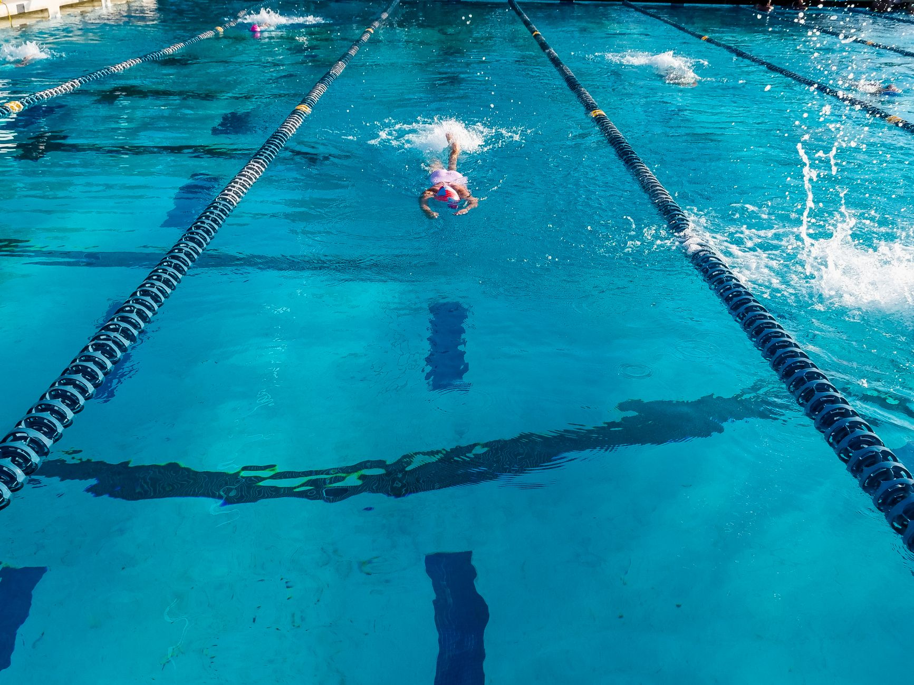

ASCA Releases Its 2026 Top 50 Age Group Team Rankings
Every year, the American Swimming Coaches Association (ASCA) publishes its Top 50 Age Group Team rankings across four competitive divisions. The 2026 list is now out, and it offers a fascinating look at which programs across the country are consistently producing fast, well-rounded young swimmers. For parents and young athletes in Wesley Chapel, Land O' Lakes, and the broader Tampa Bay area, these rankings are more than just a national scoreboard — they are a blueprint for understanding what great youth development in aquatic sports actually looks like.
Why Age Group Rankings Matter
Age group swimming is the foundation upon which competitive careers are built. The programs that appear on ASCA's list year after year share something important in common: they prioritize long-term athlete development over short-term results. That means focusing on technique, building aerobic capacity at the right developmental stages, and fostering a team culture where young athletes feel motivated to keep improving.
Rankings like these serve as a meaningful benchmark for coaches, parents, and swimmers alike. They help families understand the standard of excellence that exists in youth swimming and inspire programs everywhere — including those right here in Florida — to raise their own bar.
What Separates Elite Youth Programs from the Rest
When you look closely at the programs that consistently rank among ASCA's top age group teams, several qualities stand out.
- Qualified, experienced coaching: Top programs invest in coaches who understand both the science of swimming and the art of working with young athletes at different stages of physical and emotional development.
- Individualized attention: The best teams do not treat every swimmer identically. They recognize that a twelve-year-old and a sixteen-year-old need very different training approaches, even when competing in the same events.
- Consistent, structured training environments: Elite age group programs provide athletes with a reliable practice schedule, clear goals, and measurable progress markers so swimmers always know where they stand and what they are working toward.
- A strong team culture: Championship programs build communities, not just rosters. When young athletes support one another, celebrate shared improvement, and hold each other accountable, performance follows naturally.
- Parental engagement and education: The most successful programs keep parents informed and involved in healthy, productive ways — helping families understand how to support their swimmer's journey outside the pool.
What This Means for Tampa Bay Swimmers
Florida has long been one of the most competitive states for youth swimming, and the Tampa Bay region is no exception. Families in Wesley Chapel and Land O' Lakes have access to serious aquatic facilities and a growing community of dedicated young athletes who are hungry to compete at higher levels.
At Nexar Aquatic Academy, these are exactly the principles we work to put into practice every single day. Our coaching staff focuses on developing the whole athlete — building technical skill, competitive mindset, and a genuine love for the sport that sustains swimmers long after any single race result fades from memory.
Setting Your Own Standard of Excellence
The ASCA Top 50 list is an inspiring reminder that excellence in youth swimming is achievable with the right environment, the right coaching, and the right commitment. You do not have to be a nationally ranked program to follow the same principles that put those teams on the map.
Whether your young athlete is swimming their first competitive season or preparing for a college recruiting conversation, the foundation built during age group years matters enormously. Encourage your swimmer to embrace the process, trust their coaches, and focus on improvement over perfection. That mindset is what transforms promising young athletes into truly great ones.
If you are a family in the Wesley Chapel or Land O' Lakes area exploring your options in competitive swimming, Nexar Aquatic Academy would love to be part of your athlete's journey. Reach out to learn more about our programs and how we can help your swimmer reach their full potential.
Ready to get in the water?
First practice is completely FREE — no commitment needed.